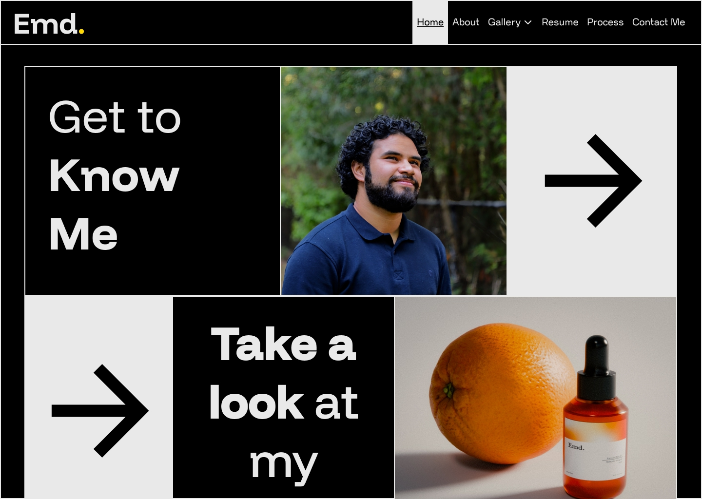
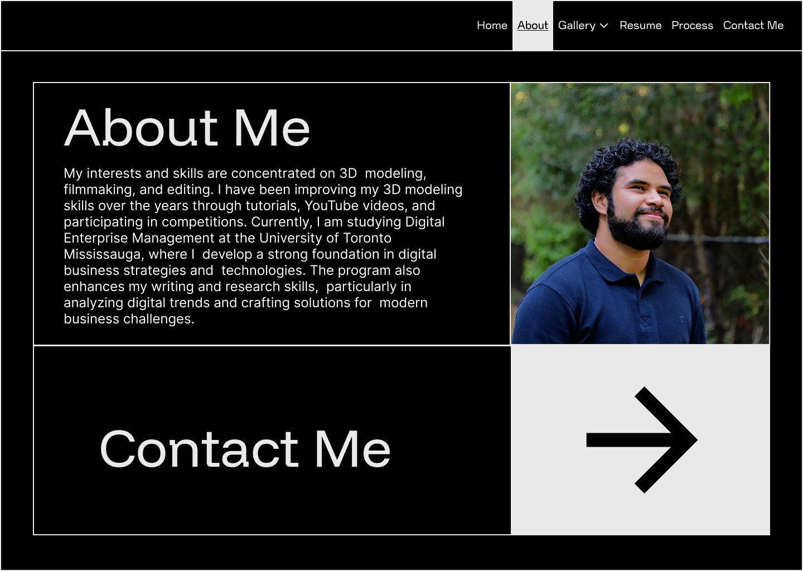
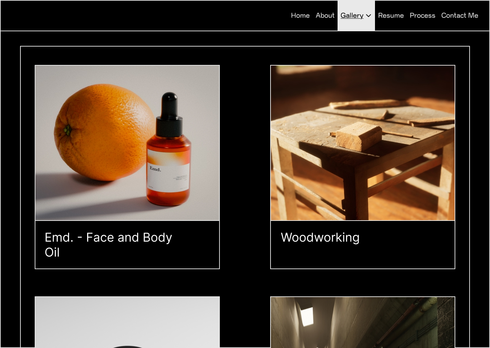
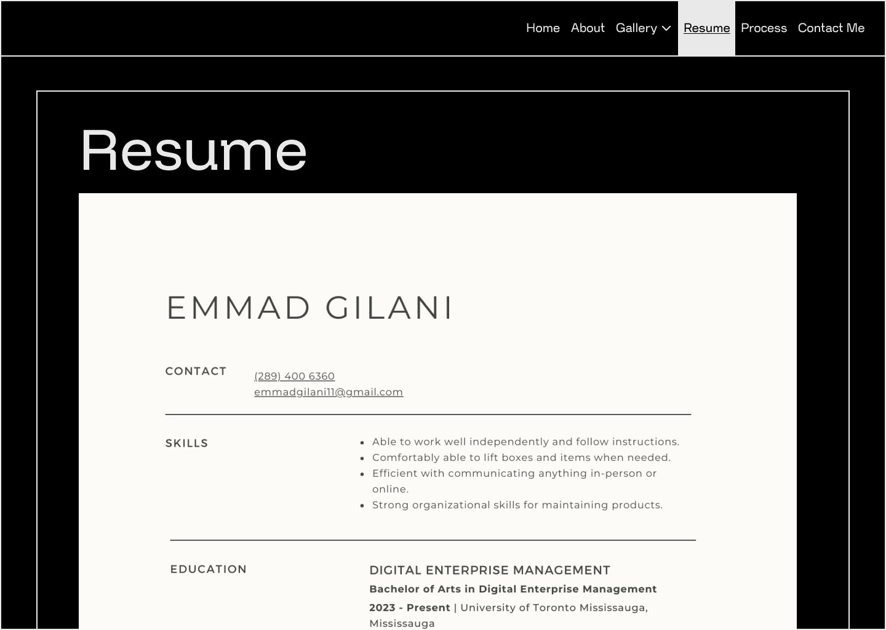
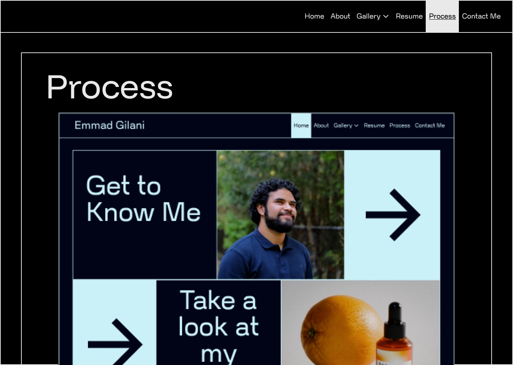
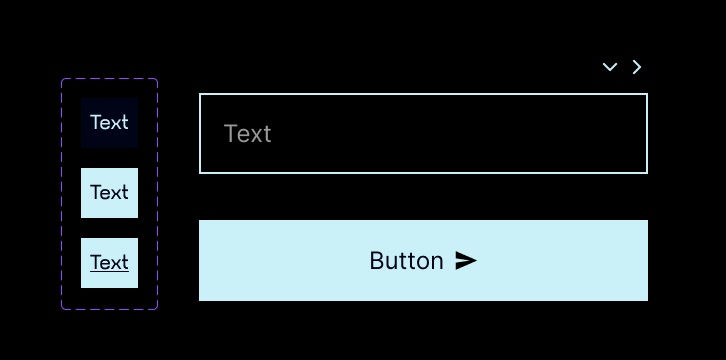

Process
Information Architecture (IA)
I made sure to follow the structural (global and local navigation), associative, and utility navigation which allowed me to plan the navigation structure before creating a prototype. This can IA can grow if I or collaborators change anything in the future.

Design Planning
Inspiration

Fonts
Both the fonts used were from Google fonts and imported through Google fonts as well.
Primary
Funnel Display
Secondary
Nunito Sans
Color Pallete
At first I went with an all blue theme with with a deep blue closer to a black and the lighter blue for text and other items that needed to be legible. I then tried the the black and white and to add interest I added the accent yellow colour to highlight and show certain elements.
I was able to create a colour pallete with the Coolors website.

Primary
Black (#000000)
Secondary
White (#E9E9E9)
Accent
Yellow (#FFCE2C)
Accessibility
I then checked the colour pallete with the WebAIM contrast checker which all the color combinations used in the project passed.


Prototypes
I create the prototypes using Figma, creating the layout and look of the website following the IA I created previously. I also created components in Figma to easily edit and change the various buttons, navigation elements, and input fields. The pages was created using the reference I have shown above and the following the color pallete since the box layout of the pages allowed for easier division for all the elements inside the page.
Below are all the webpages' prototypes:







These components allow me or collaborators to edit the layout later if needed. This allows for accessibility for the developers.
Accessibility & Usability
- I wanted to further the accessibility and usability with the use of flexbox and grid. The navigation bar is able to resize to a smaller width if needed.
- I also wanted to use redundancy gain by making sure the navigation bar was aligned to the right like most websites.
WebAIM
I then checked the colour pallete with the WebAIM contrast checker which all the color combinations used in the project passed. (Repeated this section to be included in the accessibility section).
SVGs
I made a class for the SVGs I have included which allows for collaborators to edit and change the colour of the SVGs or the size of the SVGs.
WCAG 2.0 & POUR
With the use of the contrast checker I made sure I used colors that are easy to read and see. All the images do have alt tags which allow for the user to see the alt text if the images do not load for any reason. This will allow the user to know what the possible image that should have been present. I also added the aria-label tags for the navigation which can read out the pages for assisted readers.